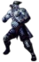
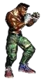
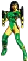
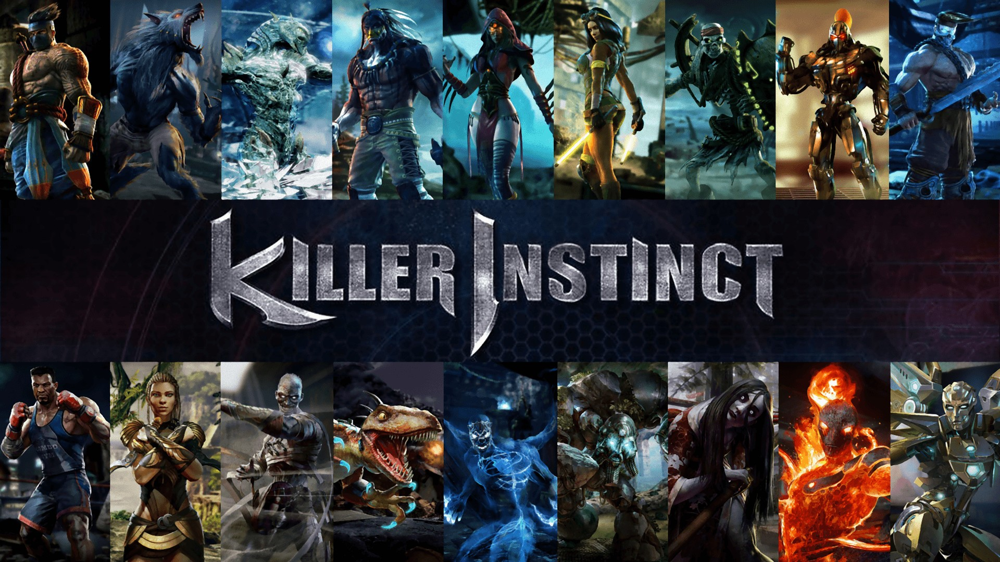

Click Start. After starting, select a cursor, then press Spacebar or wait for the intro to finish. Have Fun exploring the characters and see my personal view towards them!
×
Select Your Cursor




×
Favorite Character: This is Orchid. I always loved playing her when I was a kid where I could change colors of her outfit.
Loved her fashion aesthetic. Not only was she a fashion icon but she was super strong with amazing abilities.
Seeing a strong woman fight and win while being absolutely gorgeous was inspirational in my book. She wasn't all about looks, she was more than that — Exceptional, Radiant, and Powerful!
Her abilities were so cool so much so she turned into a large fire cat like uhm can we say GODDESS lol.
Killer Instinct isn't as known as the rest of the nostalgia or newer fighting games, so I wanted to bring back a memory to share how Killer Instinct does a great job at showing what True Strength means. :)
Main Character: This is Jago. Which come to find out is Orchid's brother. Had no idea and usually I pay attention to story type games.
They make it more engaging and fun. Him and Orchid were basically battling demons within themselves and literally outward in real life.
The bosses in all the games from the 90s up to 2016 were in direct relation to Jago and Orchid, but mainly Jago.
One of the bosses took over Jago's body in hopes to take over the world.
I wasn't a fan of playing him as a character mainly due to being terrible at using his fighting skills haha, but his storyline and fighting skills were always epic.
Best Fighter Character: CINDERRRRRR. I know I said Orchid is my favorite and I'd be lying if I was a bit biased due to her being an amazing Cat Goddess lol, but Cinder — my guy — he's FIRE literally lol.
He was originally a human, but was tested on against his will and now works by choice (crazy) with the company that turned him into the Fire Beast.
Talk about trauma bonding but hey, his skills and abilities are so cool that I can see why someone could show appreciation towards the people that made him.
I would always have a natural talent with playing him on Nintendo 64.
There was a specific skill he had that basically dominated and destroyed all players with ease — even Orchid — where I just couldn't ignore.
Loved playing him and was happy when they brought him back in the newer games. Sadly, I have yet to play the newer games but want to in order to compare it to the OG.